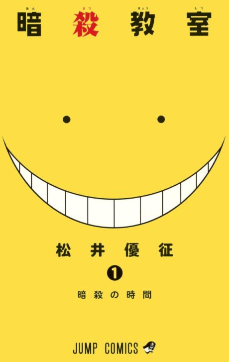
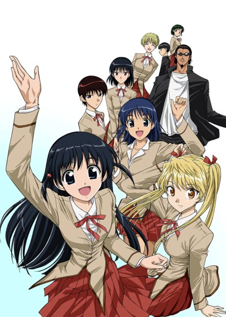

Assassination Classroom
A creature that destroyed most of the moon becomes a teacher for a class of misfits, who have one year to assassinate him before he destroys Earth.
The anime covers the whole manga.
Rate it or report where you stopped
Arcs
Episodes numbered continuously across both seasons (1-22, then 23-47), as on Wikipedia; OVAs and films are outside the numbering.
Welcome to Class 3-E
A tentacled creature that blew up most of the Moon becomes the teacher of Kunugigaoka's outcast class, and his students must kill him within a year.
School Trip
Class E's school trip to Kyoto doubles as an assassination plan.
Transfer Students
The government sends Class E new 'students' with built-in assassination weapons.
Ball Game, Takaoka and Exams
Class E faces the main campus in sports and tests while a cruel new instructor appears.
Island Assassination
Class E's assassination plan on a resort island is turned upside down by a poisoning.
Second Term Begins
After summer, Class E gets back to training and assassination lessons.
The Reaper
The world's greatest assassin, the Reaper, targets Koro-sensei by using Class E.
School Festival and Principal Asano
Class E competes with the main campus at the school festival and exams, while the principal moves against them.
Kayano's Secret
Quiet Kaede Kayano turns out to have hidden a dark motive all year.
Koro-sensei's Past
Koro-sensei finally tells the class who he was before he became a monster.
Searching for a Cure
The students try to find a way to save Koro-sensei while the world prepares to kill him.
Graduation
With the deadline near, Class E faces its final battle and final lesson.
More like Assassination Classroom
 Manga Ch. 827.4
Manga Ch. 827.4
 Unclear7.9
Unclear7.9
 Unclear8.3
Unclear8.3
 Manga Ch. 408.4
Manga Ch. 408.4
 Manga Ch. 1988.3
Manga Ch. 1988.3
 Done8.5
Done8.5

Manga Ch. 1627.6 Manga Ch. 377.7
Manga Ch. 377.7
 Manga Ch. 728.3
Manga Ch. 728.3
 Original7.7
Original7.7
 Manga Ch. 11518.7
Manga Ch. 11518.7
 Manga Vol. 78.3
Manga Vol. 78.3